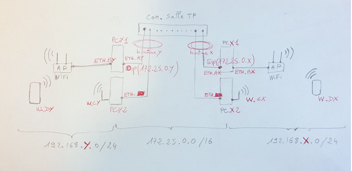
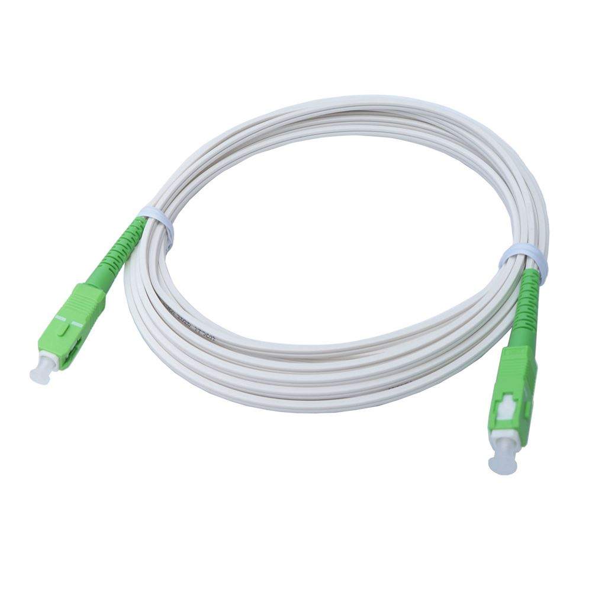

Compétences
Cybersécurité :
J’ai réalisé des travaux pratique de pentest en binôme dans le cadre d’un travail pratique. L’objectif était d’identifier des failles de sécurité sur différentes machines dans le but d’obtenir les privilèges administrateur. Pour cela, nous avons commencé par effectuer un scan réseau à l’aide d’outils comme Nmap afin de repérer les services ouverts et les éventuelles vulnérabilités exploitables.Une fois les machines ciblées identifiées, nous avons utilisé différentes techniques d’exploitation selon les failles découvertes, telles que l’utilisation de failles connues (CVE), de faiblesses dans les configurations ou de mots de passe par défaut. Dans certains cas, nous avons eu recours à des scripts automatisés ou à Metasploit pour faciliter la phase d’exploitation. Après avoir obtenu un accès limité, nous avons procédé à une élévation de privilèges pour obtenir les droits administrateur sur les machines concernées.
Cette expérience m’a permis de mieux comprendre les étapes d’un test d’intrusion : de la reconnaissance initiale jusqu’à la prise de contrôle d’une machine. J’ai aussi appris à travailler efficacement en duo, à documenter chaque étape de l’attaque, et à analyser les résultats obtenus pour en tirer des conclusions sur la sécurité du système ciblé.
Réseaux :
 J'ai effectué ce travail en binôme lors d'un travail pratique. Le but était de faire communiquer 2 machines qui étaient connectées à chacune à un point d'accès wifi dans 2 réseaux distincts.J'ai du tout d'abord configurer la carte réseau de l'ordinateur en lui attribuant une adresse IP pour accéder au point d'accès wifi. Puis je lui ai configuré le protocole DHCP qui permet l'attribution d'une adresse IP aux appareils qui se connectent au point d'accès. Pour finir, j'ai dû configurer une route pour pouvoir communiquer avec le réseau de l'autre binôme qui a réalisé les même tâche.
Durant ce TP, j'ai pu apprendre à faire communiquer des machines étant des réseaux différents et à configurer un point d'accès wifi.
Télécommunications :
 J'ai effectué ce travail en binôme lors d'un travail pratique. Le but était de tester l'atténuation d'un signal dans une fibre optique.Pour effectuer ces tests, nous avons utilisé un réflectomètre pour générer les signaux envoyés dans la fibre optique et un récepteur, un photomètre que j’ai relié par des fibres optiques. Puis j'ai pris une mesure pour avoir une valeur de référence. Ensuite, entre ces 2 instruments, j'ai ajouté des Bobines d’amorces qui sont utilisés analyser et identifier les défauts dans une fibre optique. J'ai pu constater avec des mesures effectuées avec cet ajout qu'il y avait une baisse du signal.
Ce travail m’a permis de comprendre le fonctionnement d’un signal dans une fibre optique.
Programmation :
 J’ai dû créer une page web qui est mon porte folio à l’aide de 2 langages de programmation qui sont le CCS et HTML.
J’ai dû créer une page web qui est mon porte folio à l’aide de 2 langages de programmation qui sont le CCS et HTML.Le langage HTML m'a permis de créer le texte que j'ai inséré dans ma page puis j'ai ajouté du CSS me permettant d’habiller ma page en créant différentes structures comme un fond, un menu pour choisir la partie de la page.
Ceci m'a permis de renforcer mes compétences dans la programmation web.
Téléphonie :
 J'ai effectué ce travail en binôme lors d'un travail pratique. Le but était de configurer un réseau de téléphonie IP.
J'ai effectué ce travail en binôme lors d'un travail pratique. Le but était de configurer un réseau de téléphonie IP.Pour effectuer ce travail, nous avons utilisé un serveur de téléphonie et des téléphones Unify et Cisco que j'ai reliés avec des câbles Ethernet. Puis j'ai pu configurer les abonnés en renseignant les informations nécessaires comme les numéros et les noms des abonnés. Ensuite, une fois la configuration terminée, j'ai testé les communications, tout a fonctionné. Pour terminer ce travail pratique, j'ai pu ajouter sur le serveur d'appel différentes fonctionnalités comme la redirection d'appel ou des groupes d'appels.
Ce travail m’a permis de comprendre le fonctionnement d’un réseau de téléphonie IP et comment le configurer.
Qualité :
J'ai pu développer une rigueur grâce à ma pratique du tir sportif qui demande d'être irréprochable dans la manipulation des armes et une technique complexe. Mais aussi dans les TP de télécommunications me demandent d'être attentif et très vigilant dans les manipulations.J'ai créé un esprit d'équipe grâce aux nombreux travaux de groupes, mais surtout grâce à mon expérience professionnelle qui m'a permis d'apprendre à travailler en équipe.
Je suis une personne déterminée qui une fois lancé dans une activité, met tous les moyens disponibles pour y réussir.
 Objectif : Comprendre la sécurité des équipements nomades.
Objectif : Comprendre la sécurité des équipements nomades.